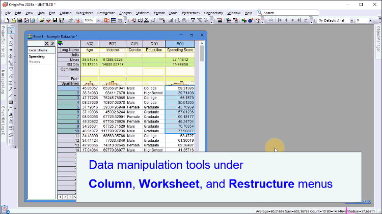

統計モードは基本的なメニューとボタンのみに絞られているため、使用したいツールが見つからない場合は、メインメニューの横にある検索バーに機能名またはボタン名を入力して検索して実行します。
統計モードは、Origin 2025bから導入された統計解析に特化したモードです。これは、グラフツールバーの多くのボタンや高度な解析ツールを非表示にすることで、Originのインターフェースを簡素化します。また、作図メニューも再構成され、統計グラフにアクセスしやすくなっています。また、DOE（実験計画法）などの人気の統計用アプリがあらかじめインストールされています。

統計モードは基本的なメニューとボタンのみに絞られているため、使用したいツールが見つからない場合は、メインメニューの横にある検索バーに機能名またはボタン名を入力して検索して実行します。 |
| Note:
インストールの際、統計GUIとライフサイエンスGUIの両方にチェックを付けると、Originはライフサイエンスモードで起動します。メニュー環境設定:GUIモード:統計を選択していつでもモードを切り替えできます。 |
Originのインストール手順については、このページを参照してください。
| Note:
統計GUIを選択すると、実験計画法（DOE）アプリが事前インストールされます。このアプリを使用するには、OriginProのインストール前にR（バージョン4.4.1）をインストールしておく必要があります。 |
いつでも従来モードに戻すことができます。
このFAQページも参照して下さい。